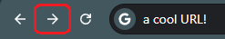
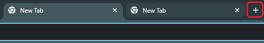
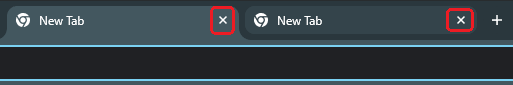

The Internet, or the Net as it is commonly abbreviated, is a global network of connected computers and devices (just like the one you're reading this on!) that communicate with each other.
It allows people all over the world to share information, send messages, browse websites, watch videos, read the news, and so much more.
The Net connects millions of computers, making it possible for anyone with an internet connection to access a vast amount of knowledge and services.
Things like your doctor, your bank, even your grocery store coupons are all accessible via the Net. This web page is meant to make all this new and exciting knowledge
just a little bit easier to digest for the first time.
What will you learn?
This website is split up into three basic sections, for you to read in order or jump back in where you left off. First, on this page you will learn the very basics of the Net
like what common online terminology means, how to navigate an average webpage on the internet, and what a website even is. In the next part, Net Safety, you will learn how to
keep yourself safe on the internet and what kinds of dangers there are for unsuspecting users. Things like creating strong passwords so hackers can't access your data, recognizing
online scams, and general safe browsing habits will be covered in part two. Finally, the last part of the main tutorial is all about keeping your privacy online. Learn what not to share,
how websites can track you, and how to keep your private information to yourself.
Some basic vocabulary
People on the Net use all sorts of new words you might not have heard of. Let's go over a handful of common terms you might hear!
E-mail - Mail that is transmitted electronically by your computer through the web. E-mail can send messages instantaneously, to anyone, any time, anywhere!
Website - A collection of pages or files on the World Wide Web, like this one!
Web Page - A single file or page, usually belonging to a website.
Browser - A piece of software like Google Chrome, Mozilla Firefox, or Internet Explorer that allows a computer to access and display documents, pictures, videos, and websites from the World Wide Web.
Search Engine - An application like Google or Bing that lets you search the web for content.
Link - A piece of underlined text that can take you to a new web page when clicked on. They usually look like this.(Don't worry, this one won't take you anywhere!)
Username/Handle - An identifying name users give themselves online in place of their real name to preserve privacy.
Password - A private text key that you use to access your data on websites and applications. NEVER share your passwords with anyone! It's like giving them the keys to your car!
Data - Information that can be about pretty much anything. Data can be things like your username and password for a website, your browsing history, or your online shopping cart.
Download - To transfer data from the internet to your personal computer.
Upload - To transfer data from your personal computer to the internet.
Server - A computer that provides, or serves data like websites to other computers.
ISP (Internet Service Provider) - A company such as AT&T or T-Mobile that provides internet access to customers.
URL (Uniform Resource Locator) - The web address of a site or page. Think of it like your house's street address, but for websites.
Internet Protocol (IP) Address - Each computer on the internet can be identified by its unique IP Address, a set of numbers you can think of like a house's address for your computer. IP Addresses typically look something like this: 192.168.123.12
Wi-Fi - A wireless way to connect your device to the internet without using cables.
App (Application) - A software program you can use on your computer, tablet, or phone to do specific tasks, like sending e-mail or browsing the web.
Attachment - A file (like a photo or document) sent along with an e-mail message.
Pop-up - A small window that appears suddenly on top of a web page, often used for ads or alerts.
Cookie - A small piece of data stored by your browser to remember information about you, like your preferences or login status.
Firewall - Security software or hardware that helps protect your computer from unwanted access or attacks from the internet.
How to Navigate a Webpage
The Mouse
There are a few ways to move around the Net. For starters, let's talk about everything your computer mouse can do. Your mouse is the tool you use to move a cursor around your computer screen.
Most computer mice have just two or three buttons, so we will focus on those. The left button is used for most actions, like clicking on links or selecting items. The right button usually opens a menu with more options related to what you clicked on. These actions are referred to as "left-clicking" and "right-clicking".
Most mice have a scroll wheel in the middle, which you can roll up or down to move the page vertically. Additionally, if a mouse has a scroll wheel it can usually also be clicked in like a button. This is referred to as "middle-clicking". In most modern browsers, middle-clicking will allow you to use your mouse's movement to automatically scroll the page.
Try it here! Middle-click your mouse and then move it slightly up or down—depending on your browser, this may enable automatic scrolling, but you might not see a visible effect on this page. Finally, you can also use your mouse to click and drag the scrollbar on the right side of most web pages to move vertically up and down. Try it now!
The Keyboard
Got the hang of the mouse by now? Let's talk about your keyboard next. Keyboards come in many shapes and sizes, but there are some important buttons that all of them should have.
The Enter key is used most commonly for submitting things, like sending a message or confirming a choice. The Backspace key deletes the character to the left of your cursor, while the Delete key removes the character to the right.
The Tab key moves your cursor to the next field or selectable item, which is especially useful when filling out forms online. The Arrow keys let you move your cursor or scroll through a page.
The Escape (Esc) key is often used to close pop-up windows or cancel actions. Try exploring these keys as you browse!
Pro Tip: pressing the Alt key and the Tab key at the same time lets you quickly swap between windows on your computer. Give it a shot!
Common Browser Buttons
Let's talk about some of the buttons you should see on your computer screen. Depending on what web browser you use, you should see a few buttons in the top-left and top-right of the window.
To keep things general and simple, we'll stick to the most universal ones. Near the top left of this webpage, by the URL bar, there should be a few buttons that look like this (all the following screenshots were taken in Google Chrome, your buttons may look different.):
The Back button: Click to go to the previous page you visited.

The Forward button: Click to go forward to a page you just left using the Back button.The Reload/Refresh button: Click to reload the current page if it isn't displaying correctly.
These buttons help you move back and forth between pages and refresh the content if needed.
Now, take a look at the very top of your browser window. Modern browsers support keeping multiple "tabs" open so you can have more than one website available at once. Simply click a tab to go to whatever content you have opened on that page. You should see something similar to the following screenshots:

The New Tab Button: Click to open a new tab which opens to the browser's homepage.

The Close Tab Button: Click to close out the associated tab.
Finally, take a look at the top-right corner of this window. You should see three more buttons that look something like this:
The Minimize button: Click to shrink the window out of view without closing it.The Resize button: Click to shrink the window slightly, and resize by dragging the edges.The Maximize button: When a window is resized, click to grow the window back to fullscreen size.The Close/Exit button: Click to exit out of the entire browser window. This will close everything you have open!
That about covers the very basics! By now you should be able to confidently move all around the Net with your mouse and keyboard. Click on the link below to continue on to the second part of this three-part tutorial; the basics of staying safe on the internet.